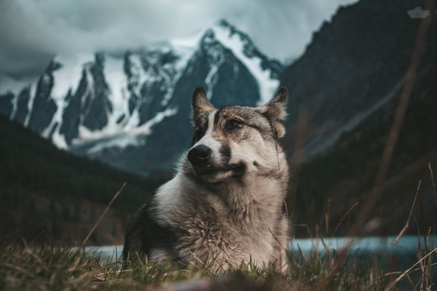
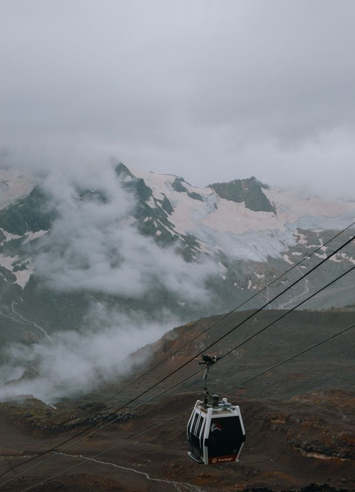
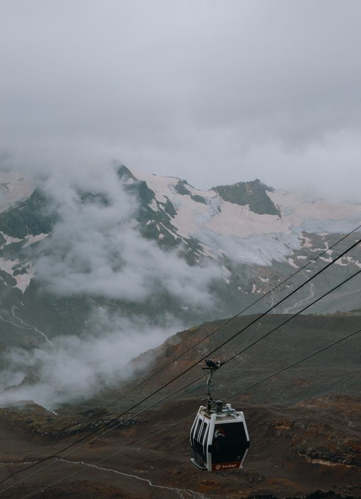
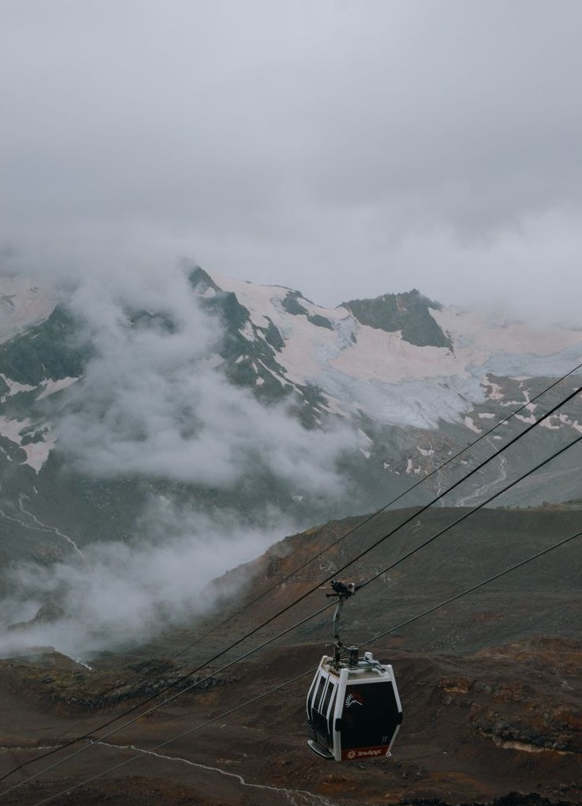

Галерея
.jpg) 

.jpg)
Горный Алтай называют русской Швейцарией, ведь местные пейзажи не уступают по красоте альпийским. Регион находится на стыке нескольких природных зон: тайги, степи и полупустыни, взяв от каждой самые живописные виды. Это не просто маршрут в самые укромные и труднодоступные долины Алтая, это очень насыщенный активный маршрут, требующий от участников физической выносливости и уверенности на горных склонах.
В ходе тура мы посетим знаменитое Кучерлинское озеро и удивительно живописное озеро Дарашколь, побывам в высотной зоне вечного льда и снега, преодолеем три серьёзных перевала и очутимся в удивительных, крайне редко посещаемых туристами высокогорных долинах Алтая.
Это романтика походной жизни и яркие ощущения водной стихии, доступные каждому! Горный Алтай со своим разнообразием рек позволяет совершать многодневные рафтинг-туры любой сложности. Мы предлагаем Вам маршруты на любой вкус и уровень подготовки туристов: от семейного отдыха с детьми до экстремального отдыха на воде с максимальными категориями сложности порогов.
На Алтае поездка на лошадях верхом по горам, когда вокруг окружает такая красота, мало кого оставит равнодушным. Горный Алтай начинает играть другими красками при подъеме в горы. А те эмоции, которые Вы испытаете заставят полюбить этих благородных животных на всю жизнь и стать фанатами поездок на лошадях.

Ночи на Алтае холодные
Сверяться с маршрутом
На всякий случай
Степные комары дикие
В дороге можно проголодаться
Запечатлеть прекрасные моменты
© Авторские права 2023